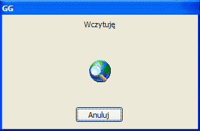

Wróć do okna Ustawienia i wybierz w nim przycisk Importuj listę kontaktów. Pojawi się okno Import listy kontaktów, w którym musisz wybrać skąd lista ma być zaimportowana. Wcześniej wysłałeś ją na serwer za pomocą oryginalnego klienta Gadu-Gadu, więc wybierz Z Serwera. Program zakomunikuje, że łączy się z serwerem w celu pobrania listy kontaktów oknem widocznym powyżej. Podczas wczytywania może się okazać, że kontakt był przydzielony do określonej grupy. Jeśli tak, Konnekt zapyta czy ją stworzyć i dodać tam kontakt. Najlepiej kliknąć Tak. W oknie głównym, na górze listy kontaktów, pojawi się zakładka danej grupy. Na końcu Konnekt powiadomi Cię, że wszystko przebiegło pomyślnie. Wciśnij przycisk OK. Okno Konnekta może po imporcie wyglądać na przykład tak jak widać to na górze, na obrazku. Zamknij okno Ustawienia klikając na przycisk OK. Na górę / Wstecz / Dalej |